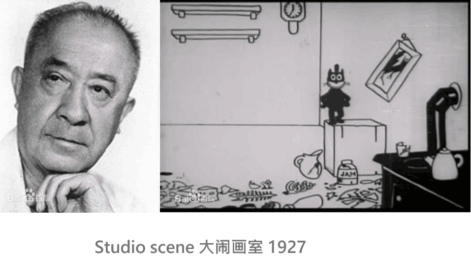
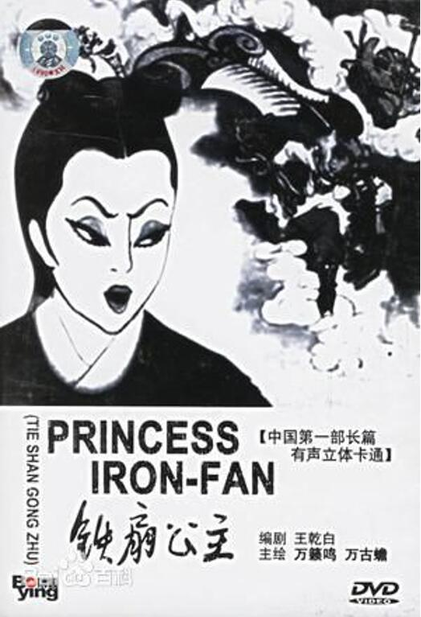
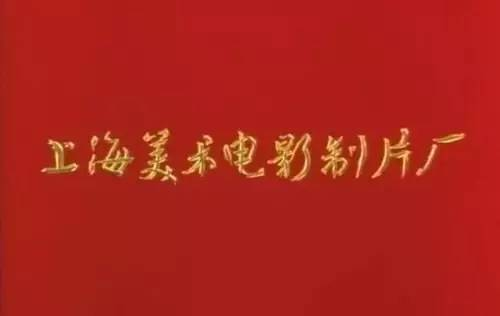
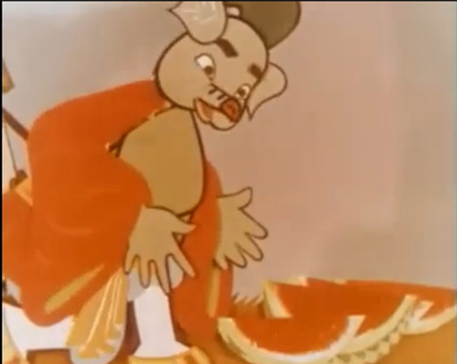

以1926年诞生的中国第一部动画《大闹画室》来试图阐述中国国产动画的起源并不为过。该片的制作人是万氏三兄弟受到了美国麦克斯影响制作出了中国第一部动画，这之后万氏三兄弟又陆续制作了《一封书信寄回来》等等一系列的动画影片。

至1941年《铁扇公主》的摄制完成，确立了中国早期动漫在其亚洲的地位。同时该片也成为第一个在日本国内上映的中国长篇动画。

至1949年的时候，新中国成立，而最新组建的东北电影制片厂拍摄了《皇帝梦》等动画作品。这之后关于国产动画我们就不得不提及上海美术电影制片厂了，但是这之前上海美术电影制片厂实际上氏50年代东北电影制片厂美术组迁至并和上影厂合并成立的。

1956年由《骄傲的将军》和《神笔》奠定了中国学派的动画电影，这之后中国动画在1958年又拍摄了《猪八戒吃西瓜》这种剪纸动画，可以说这种动画充分的表现了中国传统艺术的根基。但是同时这种太过强调艺术和教化的动画片风格，也为之后国产动画逐渐没落给了一定的基础，但是可以说这些中国学院派动画的艺术性是丝毫不容置疑的，这之后他们又制作了《渔童》、《济公斗蟋蟀》、《金色的海螺》等等全都是以民间艺术为代表的动画作品。可以说这个时期中国动画还是有着充分的民族性的，艺术层次来讲如果单纯的从画面来说也的确是高水平的制作，而且当时制作的动画作品都有着极其鲜明的民族风格，可以这样说当时的美术电影的确是充满了艺术性。不过这些艺术性在这之后就会变得难以控制，艺术越来越难融入商业的机制。

这之后很多中国传统的水墨画都被搬上了银幕，《小蝌蚪找妈妈》在世界上受到了极大的肯定。1963年瑞士第41届洛迦国际电影节获得短片银帆奖，随后又获得了别的奖项的认可。之后水墨的魅力在一定程度上席卷了各国的评奖机制，但是却并未形成一个广泛的市场认可。不过不得不承认当年的动画片艺术性的确是非常好的。但是以前的辉煌并不代表现实生活中的失败。中国动画太注重艺术性，或者说是只注重画面的风格，并没有注意到剧本的刻画，很多动画都有着鲜明的教化性，甚至是一个三国演义、一个西游记就足够了，几乎没有别的故事了。这也为后来欧美日本等国动漫作品的进入打下了良好的基础。 值得一提的是，1961-1964年中国动画公认的巅峰制作-《大闹天宫》，根据中国四大名著改编而来，在当时国内动画条件和人才都充足的情况下，这部动画片几乎代表了中国动画的最高水平。